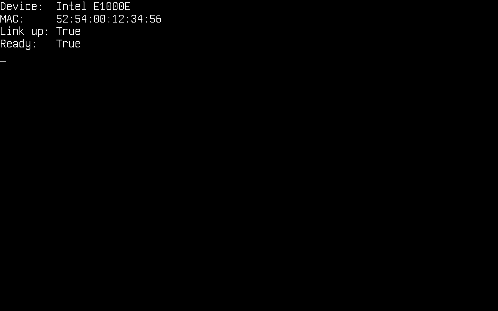
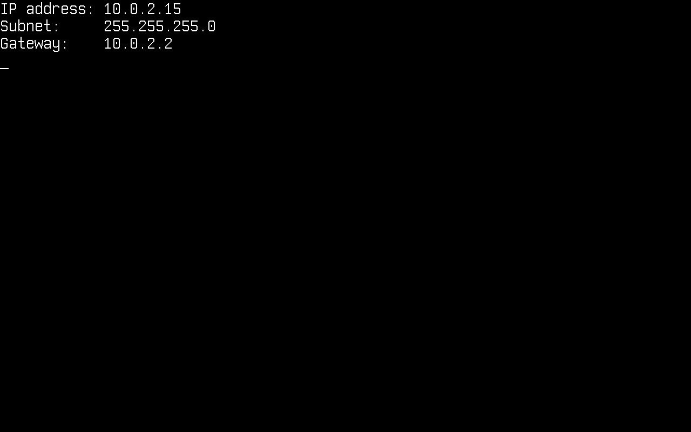
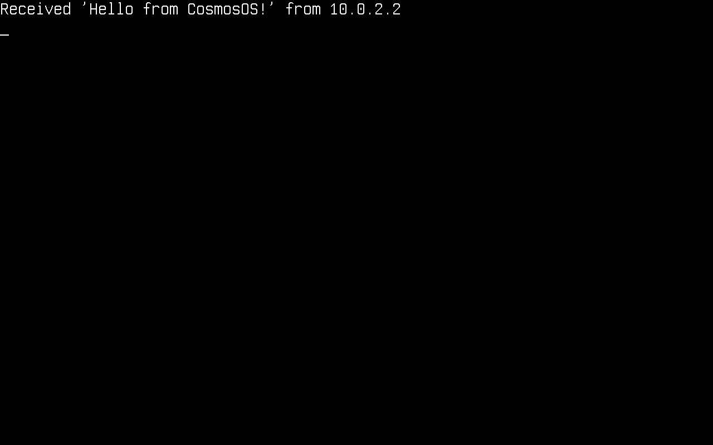

Network
In this article, we will discuss networking on Cosmos Gen3: how to bring the network stack up and send and receive packets. The available protocols are ARP, IPv4, IPv6, UDP, TCP, DHCP and DNS.
The main differences if you come from Gen2:
| Gen2 | Gen3 | |
|---|---|---|
| TCP | Standard System.Net.Sockets (plugged) |
Standard System.Net.Sockets (plugged) |
| UDP | Cosmos-specific UdpClient class |
Standard System.Net.Sockets.UdpClient (plugged) |
| DHCP | Cosmos client class | Cosmos client class (Cosmos.Kernel.System.Network) |
| DNS | Cosmos client class | Standard System.Net.Dns (plugged), or the Cosmos DnsClient |
| NIC drivers | RTL8168, E1000, PCNET | Intel E1000E (x64), virtio-net (x64 PCI + ARM64 MMIO) |
None of these protocols implements every feature of its RFC. If you find bugs or something abnormal, please submit an issue on our repository.
Enable networking in your kernel
Network support is behind a feature switch. Make sure your kernel's .csproj does not turn it off (it defaults to true):
<PropertyGroup>
<CosmosEnableNetwork>true</CosmosEnableNetwork>
</PropertyGroup>
At boot the kernel detects the NIC and registers it with NetworkManager. On x64 both Intel E1000E (QEMU's default q35 NIC, preferred when present) and virtio-net-pci are supported, so cosmos run needs no extra flags. On ARM64 attach a virtio NIC explicitly:
$ cosmos run # x64: default e1000e NIC, user-mode networking
$ cosmos run --nic virtio-net-pci # x64: virtio NIC over PCI
$ cosmos run --nic virtio-net-device # arm64: virtio NIC over MMIO
Virtio-pci devices deliver interrupts via MSI-X, which on ARM64 requires a GICv3 ITS (-M virt,gic-version=3); cosmos run launches ARM64 with QEMU's default GICv2, so use the MMIO variant there.
With QEMU user-mode networking (the default), your kernel lives in a private 10.0.2.0/24 network: the host is reachable at 10.0.2.2, QEMU's built-in DHCP server assigns addresses, and outbound UDP/TCP is NATed to the real network.
These are the usings the snippets below rely on:
using System.Net;
using System.Net.Sockets;
using System.Text;
using Cosmos.Kernel.System.Network;
using Cosmos.Kernel.System.Network.Config;
using Cosmos.Kernel.System.Network.DNS;
using Cosmos.Kernel.System.Network.IPv4;
using Cosmos.Kernel.System.Network.IPv4.DHCP;
using Cosmos.Kernel.System.Timer;
The network device
NetworkManager owns the detected NICs. Check that a device is there and ready before configuring anything:
if (NetworkManager.DeviceCount > 0)
{
Console.WriteLine("Device: " + NetworkManager.Name);
Console.WriteLine("MAC: " + NetworkManager.MacAddress?.ToString());
Console.WriteLine("Link up: " + NetworkManager.LinkUp);
Console.WriteLine("Ready: " + NetworkManager.Ready);
}
Those properties report the primary adapter, which is the one the ring uses when nothing else is named. With more than one NIC, enumerate them and pick a different primary:
for (int i = 0; i < NetworkManager.DeviceCount; i++)
{
NetworkAdapter adapter = NetworkManager.GetAdapter(i);
Console.WriteLine($"[{i}] {adapter.Name} {adapter.MacAddress} link={adapter.LinkUp}");
}
NetworkAdapter second = NetworkManager.GetAdapter(1);
if (second.IsValid)
{
NetworkManager.Primary = second;
}
A NetworkAdapter is a handle, not the device: it carries the registration index, so a default-constructed one names nothing and IsValid is false. GetAdapter answers with such a handle for an index no device occupies, which is why the assignment above is guarded: the Primary setter throws ArgumentException on a handle that names nothing, and QEMU gives the kernel a single NIC by default, so GetAdapter(1) names nothing there.

Configure IPv4
Like on any operating system, the kernel needs an IPv4 configuration (address, subnet mask, gateway) before it can talk to the network. It can be obtained dynamically through DHCP or set manually.
There is no separate stack-initialization step. Configuring an address is what brings the stack up: it maps the address and the MAC to the device. NetworkStack.RemoveAllConfigIP() reverses it.
Dynamically through DHCP
DhcpClient.SendDiscoverPacket() runs the whole DISCOVER → OFFER → REQUEST → ACK exchange and applies the resulting configuration. It returns the elapsed milliseconds, or -1 on timeout:
DhcpClient dhcpClient = new();
if (dhcpClient.SendDiscoverPacket() != -1)
{
IPConfig? config = NetworkManager.Primary.IPConfig;
if (config is not null)
{
Console.WriteLine("IP address: " + config.Address.ToString());
Console.WriteLine("Subnet: " + config.SubnetMask.ToString());
Console.WriteLine("Gateway: " + config.DefaultGateway.ToString());
}
}
else
{
Console.WriteLine("DHCP timed out");
}

Manually
if (!IPConfig.Enable(
new Address4(192, 168, 1, 69), // local address
new Address4(255, 255, 255, 0), // subnet mask
new Address4(192, 168, 1, 254))) // gateway
{
Console.WriteLine("No adapter to configure");
}
That configures the primary adapter. To configure a specific one, pass its handle. Enable returns false when the handle names no device, which is what an index past the last adapter gives you:
NetworkAdapter second = NetworkManager.GetAdapter(1);
if (second.IsValid
&& IPConfig.Enable(second,
new Address4(192, 168, 2, 69),
new Address4(255, 255, 255, 0),
new Address4(192, 168, 2, 254)))
{
Console.WriteLine("Configured the second adapter");
}
DHCP needs no handle: SendDiscoverPacket runs the exchange on every registered device.
Read the configuration back
Each adapter carries the configuration in force on it, or null while it is unconfigured:
Console.WriteLine(NetworkManager.Primary.IPConfig?.Address.ToString());
Console.WriteLine(NetworkManager.GetAdapter(1).IPConfig?.SubnetMask.ToString());
IPv6
The IPv4 configuration also brings up a link-local IPv6 address on the device: fe80::/64 with the interface identifier derived from its MAC address (RFC 4291 Appendix A). On QEMU's default NIC that is fe80::5054:ff:fe12:3456. Neighbor Discovery resolves on-link addresses the way ARP does for IPv4, and ICMPv6 echo works in both directions.
Address6? linkLocal = NetworkManager.Primary.LinkLocalAddress; // null until the device is configured
Icmpv6Client ping = new();
ping.Connect(new Address6(0xFEC0_0000, 0, 0, 2)); // QEMU user networking answers on fec0::2
ping.SendEcho();
EndPoint from = new(Address6.Zero, 0);
int elapsedMs = ping.Receive(ref from, 5000); // -1 on timeout
ping.Close();
| IPv4 | IPv6 | |
|---|---|---|
| Address | IPConfig.Enable or DHCP |
Link-local, derived from the MAC |
| Resolution | ARP | Neighbor Discovery (solicitation and advertisement) |
| Ping | IcmpClient |
Icmpv6Client |
| UDP and TCP | UdpPacket, TcpPacket |
The same two classes, checksummed over the IPv6 pseudo-header |
| DNS | DnsClient, A records |
The same client, AAAA records |
What IPv6 does not cover yet: addresses beyond link-local (Router Advertisements are ignored, no SLAAC or DHCPv6, so only on-link destinations are reachable), and AddressFamily.InterNetworkV6 on the .NET socket classes.
UDP
UDP uses the standard .NET UdpClient, no Cosmos-specific classes. Sends go out immediately; for receives, poll Available (a receive with nothing pending would block):
using System.Net.Sockets;
var udpClient = new UdpClient(4242);
/* Send data: 10.0.2.2 is the host under QEMU user networking */
byte[] message = Encoding.ASCII.GetBytes("Hello from CosmosOS!");
udpClient.Send(message, message.Length, new IPEndPoint(IPAddress.Parse("10.0.2.2"), 4242));
/* Receive data */
IPEndPoint remote = new(IPAddress.Any, 0);
while (udpClient.Available == 0)
{
TimerManager.Wait(100);
}
byte[] data = udpClient.Receive(ref remote);
Console.WriteLine("Received '" + Encoding.ASCII.GetString(data) + "' from " + remote.Address);
udpClient.Close();

TCP client
TCP also goes through the standard .NET classes: TcpClient, TcpListener and NetworkStream.
var tcpClient = new TcpClient();
tcpClient.Connect(IPAddress.Parse("10.0.2.2"), 4343);
NetworkStream stream = tcpClient.GetStream();
/* Send data */
byte[] message = Encoding.ASCII.GetBytes("Hello from CosmosOS!");
stream.Write(message, 0, message.Length);
/* Receive data */
while (!stream.DataAvailable)
{
TimerManager.Wait(100);
}
byte[] buffer = new byte[tcpClient.ReceiveBufferSize];
int bytesRead = stream.Read(buffer, 0, buffer.Length);
Console.WriteLine("Received '" + Encoding.ASCII.GetString(buffer, 0, bytesRead) + "'");
tcpClient.Close();

TCP server
TcpListener accepts incoming connections. Poll Pending() to avoid blocking in AcceptTcpClient():
var listener = new TcpListener(IPAddress.Any, 4444);
listener.Start();
Console.WriteLine("Listening on port 4444...");
while (!listener.Pending())
{
TimerManager.Wait(100);
}
TcpClient client = listener.AcceptTcpClient();
Console.WriteLine("Client connected!");
NetworkStream stream = client.GetStream();
while (!stream.DataAvailable)
{
TimerManager.Wait(100);
}
byte[] buffer = new byte[client.ReceiveBufferSize];
int bytesRead = stream.Read(buffer, 0, buffer.Length);
Console.WriteLine("Received '" + Encoding.ASCII.GetString(buffer, 0, bytesRead) + "'");
/* Echo it back */
stream.Write(buffer, 0, bytesRead);
client.Close();
listener.Stop();
To reach a listener inside QEMU user networking from your host, forward a host port to the guest. With plain QEMU that is -nic user,model=e1000e,hostfwd=tcp::4444-:4444, then connect to localhost:4444 on the host.

DNS
Two APIs resolve a name: the standard System.Net.Dns, and the Cosmos DnsClient. Register a nameserver with either one, because there is no resolv.conf to read one from and DHCP is what normally supplies it:
DnsConfig.Add(new Address4(1, 1, 1, 1)); // Cloudflare public DNS
IPAddress[] addresses = Dns.GetHostAddresses("github.com");
Console.WriteLine("github.com resolved to " + addresses[0].ToString());
System.Net.Dns reaches the Cosmos resolver through a plug on the platform layer that every one of its entry points funnels into, so the blocking overloads all work from that one plug. Two details differ from a desktop runtime: a failed lookup throws SocketException where the Cosmos client returns null, and Dns.GetHostName() reports DnsConfig.HostName, which nothing sets for you.
The Cosmos DnsClient is the other way in, and the one to use when you want the reply packet or the whole answer list:
DnsConfig.Add(new Address4(1, 1, 1, 1)); // Cloudflare public DNS
var dnsClient = new DnsClient();
dnsClient.Connect(new Address4(1, 1, 1, 1));
/* Query a single domain name */
dnsClient.SendQuery("github.com");
/* Receive the answer (5 s timeout) */
Address? address = dnsClient.Receive(5000);
if (address != null)
{
Console.WriteLine("github.com resolved to " + address.ToString());
}
dnsClient.Close();
DNS is one protocol at both IP versions, so DnsClient serves both. Two things vary independently: the server address passed to Connect decides which version carries the query, and the record type passed to SendQuery decides which address family the answer holds. An IPv4 query can ask for an IPv6 address, and the reverse:
/* Ask for the IPv6 address, over whichever version reaches the server */
dnsClient.SendQuery("github.com", DnsRecordType.AAAA);
/* Every address record for the name, after any CNAME chain */
List<Address>? all = dnsClient.ReceiveAll(5000);
DHCP is the opposite case and stays IPv4-only: DHCPv6 is a different protocol, not this one over IPv6, sharing neither its ports, its message types, nor its option codes.

Crafting packets
The packet types behind the clients are public as an experimental seam: a kernel can build protocol packets itself, transmit them through the stack, and receive the parsed packet objects instead of payload bytes. The seam carries the COSMOS0002 diagnostic (Public API Tracking); referencing it is a build error until the kernel project acknowledges the missing compatibility promise:
<PropertyGroup>
<NoWarn>$(NoWarn);COSMOS0002</NoWarn>
</PropertyGroup>
The seam has three parts:
| Part | Members |
|---|---|
| Packet types | EthernetPacket, ArpRequestEthernet/ArpReplyEthernet, InternetPacket, IPPacket, IcmpEchoRequest/IcmpEchoReply, UdpPacket, DhcpDiscover/DhcpRequest/DhcpRelease, DnsPacketQuery/DnsPacketAnswer, TcpPacket |
| Transmit and inject | NetworkStack.Send(InternetPacket) queues a built packet and resolves its neighbor address; NetworkStack.HandlePacket injects a raw frame into the receive path |
| Packet-level client I/O | UdpClient.Send(UdpPacket) / UdpClient.ReceivePacket(timeout), IcmpClient.Send(IcmpPacket) / IcmpClient.ReceivePacket(timeout) |
The seam is for building and reading the packet types the stack already
speaks, not for adding new ones: their wire fields, header checksum helpers
and the InitializeFields parse hook are internal to the stack, so a kernel
constructs a packet and reads its properties rather than deriving its own.
UdpPacket and TcpPacket serve both IP versions from one class. They do
not derive from IPPacket; they hold the packet that carries them in a
Network property, typed as the version-neutral InternetPacket. Build one
by passing two addresses of the same version, and hand packet.Network to
NetworkStack.Send:
UdpPacket datagram = new UdpPacket(localIp, remoteIp, 5000, 4242, payload);
NetworkStack.Send(datagram.Network);
A mismatched pair of addresses throws ArgumentException rather than
truncating one of them.
A crafted echo request, correlated with its reply by the identifier and sequence number the caller chose:
using Cosmos.Kernel.System.Network;
using Cosmos.Kernel.System.Network.Config;
using Cosmos.Kernel.System.Network.IPv4;
IPConfig? config = NetworkManager.Primary.IPConfig;
if (config is null)
{
Console.WriteLine("The primary adapter has no IPv4 configuration.");
return;
}
Address localIp = config.Address;
Address gateway = config.DefaultGateway;
IcmpClient icmp = new IcmpClient();
icmp.Connect(gateway);
IcmpEchoRequest request = new IcmpEchoRequest(localIp, gateway, id: 0x1234, sequence: 7);
if (!NetworkStack.Send(request))
{
Console.WriteLine("No interface carries " + localIp.ToString());
return;
}
if (icmp.ReceivePacket(5000) is IcmpEchoReply reply
&& reply.IcmpId == 0x1234 && reply.IcmpSequence == 7)
{
Console.WriteLine("reply from " + reply.SourceIP.ToString());
}
icmp.Close();
The contract the packet types actually implement:
- A build constructor writes the complete frame, including lengths and checksums, at construction time; nothing is recomputed later, so header bytes must not be modified after construction.
- Header properties are snapshots parsed from
RawDataat construction; writing toRawDatadoes not refresh them. - A parse constructor (
new XxxPacket(byte[])) aliases the caller's array without copying. NetworkStack.Sendresolves the sending device from the packet's source IP and returnsfalsewhen no configured interface matches it; the destination MAC is resolved by ARP over IPv4 and by Neighbor Discovery over IPv6, unless the destination is a broadcast or a multicast group.- The UDP checksum differs by version, and it is the one field that does. A build constructor that receives the payload writes the checksum; one that takes only a length leaves the field zero, which means "not computed" over IPv4 and is illegal over IPv6, so call
WriteChecksum()once the payload is in place. - A protocol only IPv4 carries is a subclass of
IPPacket: pass the protocol number and payload length to a build constructor and write the payload atDataOffset. A protocol both versions carry composes anInternetPacketinstead, the wayUdpPacketandTcpPacketdo.
Current limitations
System.Net.Dnsresolves A records only.IPAddressholds four bytes in the plugs, so there is nothing an AAAA answer could be returned in andAddressFamily.InterNetworkV6is refused outright. The CosmosDnsClienthas no such limit and returnsAddress6for an AAAA record.- Reverse lookups are not supported.
Dns.GetHostEntry(IPAddress)needs a PTR query againstin-addr.arpa, which the resolver does not send, so it throws rather than returning a name. - The asynchronous
Dnsoverloads are unverified.GetHostAddressesAsyncand theBegin/Endpairs reach the same plug, but they get there by queueing the blocking call to the thread pool, which this kernel has not been exercised against. The blocking overloads are the tested path. - IPv6 stops at the link. There is a link-local address, Neighbor Discovery, ICMPv6 echo, and UDP and TCP now ride IPv6 through the same packet classes as IPv4, but there is no routing table, so every destination has to be on the link. No SLAAC or DHCPv6, no address configuration beyond the link-local address, and
IPAddressstays IPv4-only in the socket plugs, so the standard .NET socket classes reach IPv4 only. - No TLS, so no
HttpClient/HTTPS: raw TCP only. - Several NICs are registered and configured, and outbound packets are routed by matching the source address against each interface's configuration, so
NetworkManager.Primarydecides only where the unrouted helpers (NetworkManager.Send, the no-handleIPConfig.Enable) go. - Half-close is not supported:
Close()on an established TCP connection expects the peer to answer the FIN handshake within 5 seconds and throws if it keeps the connection open. - On the Cosmos
UdpClientandIcmpClient,Close()andDispose()are not the same door.Close()stops delivery to the client and anIcmpClientreopens with anotherConnect();Dispose()(including the one ausingblock runs) retires the client for good, and every other member throwsObjectDisposedExceptionafterwards.
How it works
Your code calls the standard .NET socket classes, whose PAL bottoms out in Socket-level plugs in Cosmos.Kernel.Plugs (SocketPlug, TcpClientPlug, TcpListenerPlug, UdpClientPlug, NetworkStreamPlug, and NameResolutionPalPlug for Dns). Those delegate to the Cosmos network stack (the TCP state machine and UDP layer over both IP versions, with ARP and Ethernet under IPv4 and ICMPv6 and Neighbor Discovery under IPv6), which sends and receives frames through the NetworkDevice driver registered with NetworkManager. The Cosmos DhcpClient and DnsClient sit directly on the Cosmos UDP layer, DhcpClient over IPv4 only.
TcpClient / TcpListener / UdpClient / NetworkStream (stock BCL)
│
Socket plugs (Cosmos.Kernel.Plugs)
│
Cosmos TCP state machine / UDP (Cosmos.Kernel.System.Network.IPv4)
│ DhcpClient / DnsClient ride UDP directly
IPv4 / ARP and IPv6 / Neighbor Discovery / Ethernet
│
NetworkDevice driver (Intel E1000E, virtio-net)